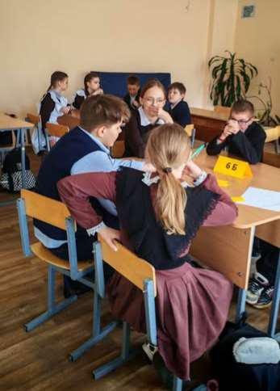
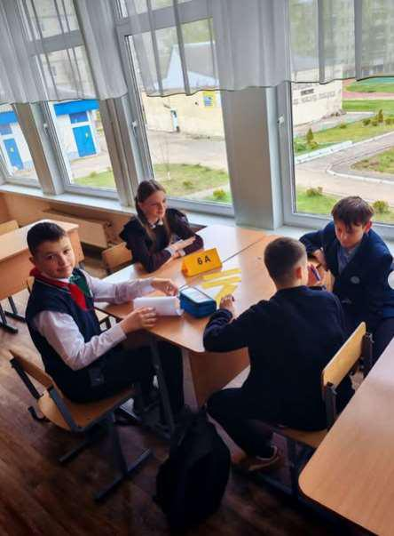
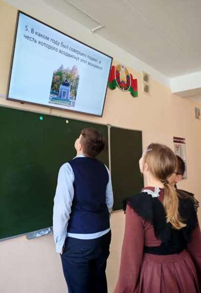

БОРИСОВ ИСТОРИЧЕСКИЙ
30 апреля среди команд 6-х классов в рамках Недели истории прошла увлекательная викторина «Борисов исторический», посвящённая истории родного города.
Мероприятие стало ярким завершением тематической недели и позволило учащимся не только проверить свои знания, но и открыть новые страницы летописи Борисова — города с богатой историей, культурными традициями и героическим прошлым.
Викторина состояла из трёх содержательных раундов, каждый из которых раскрывал особый аспект жизни города.
В раунде «Борисов исторический» участники отвечали на вопросы о дате основания города, исторических личностях, связанных с Борисовым, важных событиях разных эпох и развитии города на протяжении веков.
В раунде «Борисов культурный» команды демонстрировали знание культурного наследия: музеи, памятники архитектуры, творческие коллективы, литературные и художественные традиции родного края.
«Борисов, опалённый войной» стал особо трогательным раундом, Он был посвящённый героизму жителей города в годы Великой Отечественной войны, партизанскому движению, освобождению Борисова и памяти о защитниках Родины.
Все команды показали высокий уровень подготовки, эрудицию и умение работать в коллективе. Вопросы викторины требовали не только фактических знаний, но и логического мышления, внимательности и командной поддержки.
В результате напряжённой борьбы, с минимальным отрывом, победителем викторины стала команда 6 «Г» класса!


